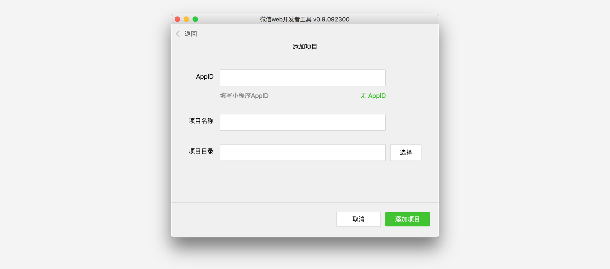
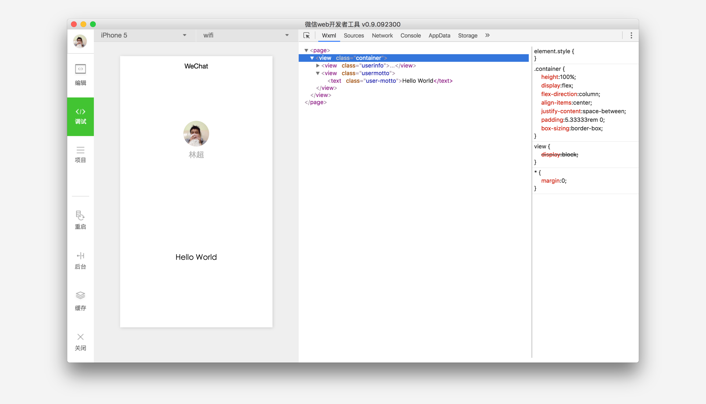
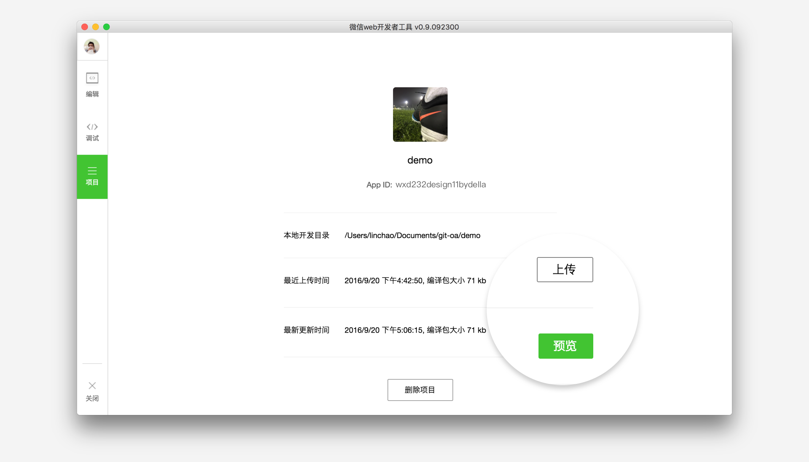

<!DOCTYPE HTML>
<html lang="" >
    <head>
        <meta charset="UTF-8">
        <meta content="text/html; charset=utf-8" http-equiv="Content-Type">
        <title>第一部分 入门 · GitBook</title>
        <meta http-equiv="X-UA-Compatible" content="IE=edge" />
        <meta name="description" content="">
        <meta name="generator" content="GitBook 3.2.2">
        
        
        
    
    <link rel="stylesheet" href="../gitbook/style.css">

    
            
                
                <link rel="stylesheet" href="../gitbook/gitbook-plugin-betterchinese/unicode.css">
                
            
                
                <link rel="stylesheet" href="../gitbook/gitbook-plugin-highlight/website.css">
                
            
                
                <link rel="stylesheet" href="../gitbook/gitbook-plugin-search/search.css">
                
            
                
                <link rel="stylesheet" href="../gitbook/gitbook-plugin-fontsettings/website.css">
                
            
        

    

    
        
    
        
    
        
    
        
    
        
    
        
    

        
    
    
    <meta name="HandheldFriendly" content="true"/>
    <meta name="viewport" content="width=device-width, initial-scale=1, user-scalable=no">
    <meta name="apple-mobile-web-app-capable" content="yes">
    <meta name="apple-mobile-web-app-status-bar-style" content="black">
    <link rel="apple-touch-icon-precomposed" sizes="152x152" href="../gitbook/images/apple-touch-icon-precomposed-152.png">
    <link rel="shortcut icon" href="../gitbook/images/favicon.ico" type="image/x-icon">

    
    <link rel="next" href="简易教程.html" />
    
    
    <link rel="prev" href="../" />
    

    </head>
    <body>
        
<div class="book">
    <div class="book-summary">
        
            
<div id="book-search-input" role="search">
    <input type="text" placeholder="Type to search" />
</div>

            
                <nav role="navigation">
                


<ul class="summary">
    
    

    

    
        
        
    
        <li class="chapter " data-level="1.1" data-path="../">
            
                <a href="../">
            
                    
                    前言
            
                </a>
            

            
        </li>
    

    
        
        <li class="divider"></li>
        
        
    
        <li class="chapter active" data-level="2.1" data-path="简易教程.html">
            
                <a href="简易教程.html">
            
                    
                    第一部分 入门
            
                </a>
            

            
            <ul class="articles">
                
    
        <li class="chapter active" data-level="2.1.1" data-path="简易教程.html">
            
                <a href="简易教程.html">
            
                    
                    简易教程
            
                </a>
            

            
        </li>
    
        <li class="chapter " data-level="2.1.2" data-path="体验小程序.html">
            
                <a href="体验小程序.html">
            
                    
                    体验小程序
            
                </a>
            

            
        </li>
    

            </ul>
            
        </li>
    

    
        
        <li class="divider"></li>
        
        
    
        <li class="chapter " data-level="3.1" data-path="../框架/">
            
                <a href="../框架/">
            
                    
                    第二部分 框架
            
                </a>
            

            
            <ul class="articles">
                
    
        <li class="chapter " data-level="3.1.1" data-path="../框架/目录结构.html">
            
                <a href="../框架/目录结构.html">
            
                    
                    目录结构
            
                </a>
            

            
        </li>
    
        <li class="chapter " data-level="3.1.2" data-path="../框架/配置.html">
            
                <a href="../框架/配置.html">
            
                    
                    配置
            
                </a>
            

            
        </li>
    
        <li class="chapter " data-level="3.1.3" data-path="../框架/逻辑层/">
            
                <a href="../框架/逻辑层/">
            
                    
                    逻辑层
            
                </a>
            

            
            <ul class="articles">
                
    
        <li class="chapter " data-level="3.1.3.1" data-path="../框架/逻辑层/注册程序.html">
            
                <a href="../框架/逻辑层/注册程序.html">
            
                    
                    注册程序
            
                </a>
            

            
        </li>
    
        <li class="chapter " data-level="3.1.3.2" data-path="../框架/逻辑层/注册页面.html">
            
                <a href="../框架/逻辑层/注册页面.html">
            
                    
                    注册页面
            
                </a>
            

            
        </li>
    
        <li class="chapter " data-level="3.1.3.3" data-path="../框架/逻辑层/模块化.html">
            
                <a href="../框架/逻辑层/模块化.html">
            
                    
                    模块化
            
                </a>
            

            
        </li>
    
        <li class="chapter " data-level="3.1.3.4" data-path="../框架/逻辑层/API.html">
            
                <a href="../框架/逻辑层/API.html">
            
                    
                    API
            
                </a>
            

            
        </li>
    

            </ul>
            
        </li>
    
        <li class="chapter " data-level="3.1.4" data-path="../框架/视图层/">
            
                <a href="../框架/视图层/">
            
                    
                    视图层
            
                </a>
            

            
            <ul class="articles">
                
    
        <li class="chapter " data-level="3.1.4.1" data-path="../框架/视图层/WXML/">
            
                <a href="../框架/视图层/WXML/">
            
                    
                    WXML
            
                </a>
            

            
            <ul class="articles">
                
    
        <li class="chapter " data-level="3.1.4.1.1" data-path="../框架/视图层/WXML/数据绑定.html">
            
                <a href="../框架/视图层/WXML/数据绑定.html">
            
                    
                    数据绑定
            
                </a>
            

            
        </li>
    
        <li class="chapter " data-level="3.1.4.1.2" data-path="../框架/视图层/WXML/条件渲染.html">
            
                <a href="../框架/视图层/WXML/条件渲染.html">
            
                    
                    条件渲染
            
                </a>
            

            
        </li>
    
        <li class="chapter " data-level="3.1.4.1.3" data-path="../框架/视图层/WXML/列表渲染.html">
            
                <a href="../框架/视图层/WXML/列表渲染.html">
            
                    
                    列表渲染
            
                </a>
            

            
        </li>
    
        <li class="chapter " data-level="3.1.4.1.4" data-path="../框架/视图层/WXML/模板.html">
            
                <a href="../框架/视图层/WXML/模板.html">
            
                    
                    模板
            
                </a>
            

            
        </li>
    
        <li class="chapter " data-level="3.1.4.1.5" data-path="../框架/视图层/WXML/事件.html">
            
                <a href="../框架/视图层/WXML/事件.html">
            
                    
                    事件
            
                </a>
            

            
        </li>
    
        <li class="chapter " data-level="3.1.4.1.6" data-path="../框架/视图层/WXML/引用.html">
            
                <a href="../框架/视图层/WXML/引用.html">
            
                    
                    引用
            
                </a>
            

            
        </li>
    

            </ul>
            
        </li>
    
        <li class="chapter " data-level="3.1.4.2" data-path="../框架/视图层/WXSS.html">
            
                <a href="../框架/视图层/WXSS.html">
            
                    
                    WXSS
            
                </a>
            

            
        </li>
    
        <li class="chapter " data-level="3.1.4.3" data-path="../框架/视图层/组件.html">
            
                <a href="../框架/视图层/组件.html">
            
                    
                    组件
            
                </a>
            

            
        </li>
    

            </ul>
            
        </li>
    

            </ul>
            
        </li>
    

    
        
        <li class="divider"></li>
        
        
    
        <li class="chapter " data-level="4.1" data-path="../组件/">
            
                <a href="../组件/">
            
                    
                    第三部分 组件
            
                </a>
            

            
            <ul class="articles">
                
    
        <li class="chapter " data-level="4.1.1" data-path="../组件/视图容器/view.html">
            
                <a href="../组件/视图容器/view.html">
            
                    
                    视图容器
            
                </a>
            

            
            <ul class="articles">
                
    
        <li class="chapter " data-level="4.1.1.1" data-path="../组件/视图容器/view.html">
            
                <a href="../组件/视图容器/view.html">
            
                    
                    view
            
                </a>
            

            
        </li>
    
        <li class="chapter " data-level="4.1.1.2" data-path="../组件/视图容器/scroll-view.html">
            
                <a href="../组件/视图容器/scroll-view.html">
            
                    
                    scroll-view
            
                </a>
            

            
        </li>
    
        <li class="chapter " data-level="4.1.1.3" data-path="../组件/视图容器/swiper.html">
            
                <a href="../组件/视图容器/swiper.html">
            
                    
                    swiper
            
                </a>
            

            
        </li>
    

            </ul>
            
        </li>
    
        <li class="chapter " data-level="4.1.2" data-path="../组件/基础内容/icon.html">
            
                <a href="../组件/基础内容/icon.html">
            
                    
                    基础内容
            
                </a>
            

            
            <ul class="articles">
                
    
        <li class="chapter " data-level="4.1.2.1" data-path="../组件/基础内容/icon.html">
            
                <a href="../组件/基础内容/icon.html">
            
                    
                    icon
            
                </a>
            

            
        </li>
    
        <li class="chapter " data-level="4.1.2.2" data-path="../组件/基础内容/text.html">
            
                <a href="../组件/基础内容/text.html">
            
                    
                    text
            
                </a>
            

            
        </li>
    
        <li class="chapter " data-level="4.1.2.3" data-path="../组件/基础内容/progress.html">
            
                <a href="../组件/基础内容/progress.html">
            
                    
                    progress
            
                </a>
            

            
        </li>
    

            </ul>
            
        </li>
    
        <li class="chapter " data-level="4.1.3" data-path="../组件/表单组件/button.html">
            
                <a href="../组件/表单组件/button.html">
            
                    
                    表单组件
            
                </a>
            

            
            <ul class="articles">
                
    
        <li class="chapter " data-level="4.1.3.1" data-path="../组件/表单组件/button.html">
            
                <a href="../组件/表单组件/button.html">
            
                    
                    button
            
                </a>
            

            
        </li>
    
        <li class="chapter " data-level="4.1.3.2" data-path="../组件/表单组件/checkbox.html">
            
                <a href="../组件/表单组件/checkbox.html">
            
                    
                    checkbox
            
                </a>
            

            
        </li>
    
        <li class="chapter " data-level="4.1.3.3" data-path="../组件/表单组件/form.html">
            
                <a href="../组件/表单组件/form.html">
            
                    
                    form
            
                </a>
            

            
        </li>
    
        <li class="chapter " data-level="4.1.3.4" data-path="../组件/表单组件/input.html">
            
                <a href="../组件/表单组件/input.html">
            
                    
                    input
            
                </a>
            

            
        </li>
    
        <li class="chapter " data-level="4.1.3.5" data-path="../组件/表单组件/label.html">
            
                <a href="../组件/表单组件/label.html">
            
                    
                    label
            
                </a>
            

            
        </li>
    
        <li class="chapter " data-level="4.1.3.6" data-path="../组件/表单组件/picker.html">
            
                <a href="../组件/表单组件/picker.html">
            
                    
                    picker
            
                </a>
            

            
        </li>
    
        <li class="chapter " data-level="4.1.3.7" data-path="../组件/表单组件/radio.html">
            
                <a href="../组件/表单组件/radio.html">
            
                    
                    radio
            
                </a>
            

            
        </li>
    
        <li class="chapter " data-level="4.1.3.8" data-path="../组件/表单组件/slider.html">
            
                <a href="../组件/表单组件/slider.html">
            
                    
                    slider
            
                </a>
            

            
        </li>
    
        <li class="chapter " data-level="4.1.3.9" data-path="../组件/表单组件/switch.html">
            
                <a href="../组件/表单组件/switch.html">
            
                    
                    switch
            
                </a>
            

            
        </li>
    

            </ul>
            
        </li>
    
        <li class="chapter " data-level="4.1.4" data-path="../组件/操作反馈/action-sheet.html">
            
                <a href="../组件/操作反馈/action-sheet.html">
            
                    
                    操作反馈
            
                </a>
            

            
            <ul class="articles">
                
    
        <li class="chapter " data-level="4.1.4.1" data-path="../组件/操作反馈/action-sheet.html">
            
                <a href="../组件/操作反馈/action-sheet.html">
            
                    
                    action-sheet
            
                </a>
            

            
        </li>
    
        <li class="chapter " data-level="4.1.4.2" data-path="../组件/操作反馈/modal.html">
            
                <a href="../组件/操作反馈/modal.html">
            
                    
                    modal
            
                </a>
            

            
        </li>
    
        <li class="chapter " data-level="4.1.4.3" data-path="../组件/操作反馈/toast.html">
            
                <a href="../组件/操作反馈/toast.html">
            
                    
                    toast
            
                </a>
            

            
        </li>
    
        <li class="chapter " data-level="4.1.4.4" data-path="../组件/操作反馈/loading.html">
            
                <a href="../组件/操作反馈/loading.html">
            
                    
                    loading
            
                </a>
            

            
        </li>
    

            </ul>
            
        </li>
    
        <li class="chapter " data-level="4.1.5" data-path="../组件/导航/navigator.html">
            
                <a href="../组件/导航/navigator.html">
            
                    
                    导航
            
                </a>
            

            
            <ul class="articles">
                
    
        <li class="chapter " data-level="4.1.5.1" data-path="../组件/导航/navigator.html">
            
                <a href="../组件/导航/navigator.html">
            
                    
                    navigator
            
                </a>
            

            
        </li>
    

            </ul>
            
        </li>
    
        <li class="chapter " data-level="4.1.6" data-path="../组件/媒体组件/audio.html">
            
                <a href="../组件/媒体组件/audio.html">
            
                    
                    媒体组件
            
                </a>
            

            
            <ul class="articles">
                
    
        <li class="chapter " data-level="4.1.6.1" data-path="../组件/媒体组件/audio.html">
            
                <a href="../组件/媒体组件/audio.html">
            
                    
                    audio
            
                </a>
            

            
        </li>
    
        <li class="chapter " data-level="4.1.6.2" data-path="../组件/媒体组件/image.html">
            
                <a href="../组件/媒体组件/image.html">
            
                    
                    image
            
                </a>
            

            
        </li>
    
        <li class="chapter " data-level="4.1.6.3" data-path="../组件/媒体组件/video.html">
            
                <a href="../组件/媒体组件/video.html">
            
                    
                    video
            
                </a>
            

            
        </li>
    

            </ul>
            
        </li>
    
        <li class="chapter " data-level="4.1.7" data-path="../组件/地图/map.html">
            
                <a href="../组件/地图/map.html">
            
                    
                    地图
            
                </a>
            

            
            <ul class="articles">
                
    
        <li class="chapter " data-level="4.1.7.1" data-path="../组件/地图/map.html">
            
                <a href="../组件/地图/map.html#map">
            
                    
                    map
            
                </a>
            

            
        </li>
    

            </ul>
            
        </li>
    
        <li class="chapter " data-level="4.1.8" data-path="../组件/画布/canvas.html">
            
                <a href="../组件/画布/canvas.html">
            
                    
                    画布
            
                </a>
            

            
            <ul class="articles">
                
    
        <li class="chapter " data-level="4.1.8.1" data-path="../组件/画布/canvas.html">
            
                <a href="../组件/画布/canvas.html#canvas">
            
                    
                    canvas
            
                </a>
            

            
        </li>
    

            </ul>
            
        </li>
    

            </ul>
            
        </li>
    

    
        
        <li class="divider"></li>
        
        
    
        <li class="chapter " data-level="5.1" data-path="../API/">
            
                <a href="../API/">
            
                    
                    第四部分 API
            
                </a>
            

            
            <ul class="articles">
                
    
        <li class="chapter " data-level="5.1.1" data-path="../API/网络/">
            
                <a href="../API/网络/">
            
                    
                    网络
            
                </a>
            

            
            <ul class="articles">
                
    
        <li class="chapter " data-level="5.1.1.1" data-path="../API/网络/发起请求.html">
            
                <a href="../API/网络/发起请求.html">
            
                    
                    发起请求
            
                </a>
            

            
        </li>
    
        <li class="chapter " data-level="5.1.1.2" data-path="../API/网络/上传、下载.html">
            
                <a href="../API/网络/上传、下载.html">
            
                    
                    上传、下载
            
                </a>
            

            
            <ul class="articles">
                
    
        <li class="chapter " data-level="5.1.1.2.1" data-path="../API/网络/上传、下载.html">
            
                <a href="../API/网络/上传、下载.html#wxuploadfileobject">
            
                    
                    wx.uploadFile
            
                </a>
            

            
        </li>
    
        <li class="chapter " data-level="5.1.1.2.2" data-path="../API/网络/上传、下载.html">
            
                <a href="../API/网络/上传、下载.html#wxdownloadfileobject">
            
                    
                    wx.downloadFile
            
                </a>
            

            
        </li>
    

            </ul>
            
        </li>
    
        <li class="chapter " data-level="5.1.1.3" data-path="../API/网络/WebSocket.html">
            
                <a href="../API/网络/WebSocket.html">
            
                    
                    WebSocket
            
                </a>
            

            
            <ul class="articles">
                
    
        <li class="chapter " data-level="5.1.1.3.1" data-path="../API/网络/WebSocket.html">
            
                <a href="../API/网络/WebSocket.html#wxconnectsocketobject">
            
                    
                    wx.connectSocket
            
                </a>
            

            
        </li>
    
        <li class="chapter " data-level="5.1.1.3.2" data-path="../API/网络/WebSocket.html">
            
                <a href="../API/网络/WebSocket.html#wxonsocketopencallback">
            
                    
                    wx.onSocketOpen
            
                </a>
            

            
        </li>
    
        <li class="chapter " data-level="5.1.1.3.3" data-path="../API/网络/WebSocket.html">
            
                <a href="../API/网络/WebSocket.html#wxonsocketerrorcallback">
            
                    
                    wx.onSocketError
            
                </a>
            

            
        </li>
    
        <li class="chapter " data-level="5.1.1.3.4" data-path="../API/网络/WebSocket.html">
            
                <a href="../API/网络/WebSocket.html#wxsendsocketmessageobject">
            
                    
                    wx.sendSocketMessage
            
                </a>
            

            
        </li>
    
        <li class="chapter " data-level="5.1.1.3.5" data-path="../API/网络/WebSocket.html">
            
                <a href="../API/网络/WebSocket.html#wxonsocketmessagecallback">
            
                    
                    wx.onSocketMessage
            
                </a>
            

            
        </li>
    
        <li class="chapter " data-level="5.1.1.3.6" data-path="../API/网络/WebSocket.html">
            
                <a href="../API/网络/WebSocket.html#wxclosesocket">
            
                    
                    wx.closeSocket
            
                </a>
            

            
        </li>
    
        <li class="chapter " data-level="5.1.1.3.7" data-path="../API/网络/WebSocket.html">
            
                <a href="../API/网络/WebSocket.html#wxonsocketclosecallback">
            
                    
                    wx.onSocketClose
            
                </a>
            

            
        </li>
    

            </ul>
            
        </li>
    

            </ul>
            
        </li>
    
        <li class="chapter " data-level="5.1.2" data-path="../API/媒体/图片.html">
            
                <a href="../API/媒体/图片.html">
            
                    
                    媒体
            
                </a>
            

            
            <ul class="articles">
                
    
        <li class="chapter " data-level="5.1.2.1" data-path="../API/媒体/图片.html">
            
                <a href="../API/媒体/图片.html">
            
                    
                    图片
            
                </a>
            

            
            <ul class="articles">
                
    
        <li class="chapter " data-level="5.1.2.1.1" data-path="../API/媒体/图片.html">
            
                <a href="../API/媒体/图片.html#wxchooseimageobject">
            
                    
                    wx.chooseImage
            
                </a>
            

            
        </li>
    
        <li class="chapter " data-level="5.1.2.1.2" data-path="../API/媒体/图片.html">
            
                <a href="../API/媒体/图片.html#wxpreviewimageobject">
            
                    
                    wx.previewImage
            
                </a>
            

            
        </li>
    

            </ul>
            
        </li>
    
        <li class="chapter " data-level="5.1.2.2" data-path="../API/媒体/录音.html">
            
                <a href="../API/媒体/录音.html">
            
                    
                    录音
            
                </a>
            

            
            <ul class="articles">
                
    
        <li class="chapter " data-level="5.1.2.2.1" data-path="../API/媒体/录音.html">
            
                <a href="../API/媒体/录音.html#wxstartrecordobject">
            
                    
                    wx.startRecord
            
                </a>
            

            
        </li>
    
        <li class="chapter " data-level="5.1.2.2.2" data-path="../API/媒体/录音.html">
            
                <a href="../API/媒体/录音.html#wxstoprecord">
            
                    
                    wx.stopRecord
            
                </a>
            

            
        </li>
    

            </ul>
            
        </li>
    
        <li class="chapter " data-level="5.1.2.3" data-path="../API/媒体/音频播放控制.html">
            
                <a href="../API/媒体/音频播放控制.html">
            
                    
                    音频播放控制
            
                </a>
            

            
            <ul class="articles">
                
    
        <li class="chapter " data-level="5.1.2.3.1" data-path="../API/媒体/音频播放控制.html">
            
                <a href="../API/媒体/音频播放控制.html#wxplayvoiceobject">
            
                    
                    wx.playVoice
            
                </a>
            

            
        </li>
    
        <li class="chapter " data-level="5.1.2.3.2" data-path="../API/媒体/音频播放控制.html">
            
                <a href="../API/媒体/音频播放控制.html#wxpausevoice">
            
                    
                    wx.pauseVoice
            
                </a>
            

            
        </li>
    
        <li class="chapter " data-level="5.1.2.3.3" data-path="../API/媒体/音频播放控制.html">
            
                <a href="../API/媒体/音频播放控制.html#wxstopvoice">
            
                    
                    wx.stopVoice
            
                </a>
            

            
        </li>
    

            </ul>
            
        </li>
    
        <li class="chapter " data-level="5.1.2.4" data-path="../API/媒体/音乐播放控制.html">
            
                <a href="../API/媒体/音乐播放控制.html">
            
                    
                    音乐播放控制
            
                </a>
            

            
            <ul class="articles">
                
    
        <li class="chapter " data-level="5.1.2.4.1" data-path="../API/媒体/音乐播放控制.html">
            
                <a href="../API/媒体/音乐播放控制.html#wxgetbackgroundaudioplayerstateobject">
            
                    
                    wx.getBackgroundAudioPlayerState
            
                </a>
            

            
        </li>
    
        <li class="chapter " data-level="5.1.2.4.2" data-path="../API/媒体/音乐播放控制.html">
            
                <a href="../API/媒体/音乐播放控制.html#wxplaybackgroundaudioobject">
            
                    
                    wx.playBackgroundAudio
            
                </a>
            

            
        </li>
    
        <li class="chapter " data-level="5.1.2.4.3" data-path="../API/媒体/音乐播放控制.html">
            
                <a href="../API/媒体/音乐播放控制.html#wxpausebackgroundaudio">
            
                    
                    wx.pauseBackgroundAudio
            
                </a>
            

            
        </li>
    
        <li class="chapter " data-level="5.1.2.4.4" data-path="../API/媒体/音乐播放控制.html">
            
                <a href="../API/媒体/音乐播放控制.html#wxseekbackgroundaudioobject">
            
                    
                    wx.seekBackgroundAudio
            
                </a>
            

            
        </li>
    
        <li class="chapter " data-level="5.1.2.4.5" data-path="../API/媒体/音乐播放控制.html">
            
                <a href="../API/媒体/音乐播放控制.html#wxstopbackgroundaudio">
            
                    
                    wx.stopBackgroundAudio
            
                </a>
            

            
        </li>
    
        <li class="chapter " data-level="5.1.2.4.6" data-path="../API/媒体/音乐播放控制.html">
            
                <a href="../API/媒体/音乐播放控制.html#wxonbackgroundaudioplaycallback">
            
                    
                    wx.onBackgroundAudioPlay
            
                </a>
            

            
        </li>
    
        <li class="chapter " data-level="5.1.2.4.7" data-path="../API/媒体/音乐播放控制.html">
            
                <a href="../API/媒体/音乐播放控制.html#wxonbackgroundaudiopausecallback">
            
                    
                    wx.onBackgroundAudioPause
            
                </a>
            

            
        </li>
    
        <li class="chapter " data-level="5.1.2.4.8" data-path="../API/媒体/音乐播放控制.html">
            
                <a href="../API/媒体/音乐播放控制.html#wxonbackgroundaudiostopcallback">
            
                    
                    wx.onBackgroundAudioStop
            
                </a>
            

            
        </li>
    

            </ul>
            
        </li>
    
        <li class="chapter " data-level="5.1.2.5" data-path="../API/媒体/文件.html">
            
                <a href="../API/媒体/文件.html">
            
                    
                    文件
            
                </a>
            

            
        </li>
    
        <li class="chapter " data-level="5.1.2.6" data-path="../API/媒体/视频.html">
            
                <a href="../API/媒体/视频.html">
            
                    
                    视频
            
                </a>
            

            
        </li>
    

            </ul>
            
        </li>
    
        <li class="chapter " data-level="5.1.3" data-path="../API/数据.html">
            
                <a href="../API/数据.html">
            
                    
                    数据
            
                </a>
            

            
            <ul class="articles">
                
    
        <li class="chapter " data-level="5.1.3.1" data-path="../API/数据.html">
            
                <a href="../API/数据.html">
            
                    
                    数据缓存
            
                </a>
            

            
            <ul class="articles">
                
    
        <li class="chapter " data-level="5.1.3.1.1" data-path="../API/数据.html">
            
                <a href="../API/数据.html#wxsetstorageobject">
            
                    
                    wx.setStorage
            
                </a>
            

            
        </li>
    
        <li class="chapter " data-level="5.1.3.1.2" data-path="../API/数据.html">
            
                <a href="../API/数据.html#wxsetstoragesynckeyvalue">
            
                    
                    wx.setStorageSync
            
                </a>
            

            
        </li>
    
        <li class="chapter " data-level="5.1.3.1.3" data-path="../API/数据.html">
            
                <a href="../API/数据.html#wxgetstorageobject">
            
                    
                    wx.getStorage
            
                </a>
            

            
        </li>
    
        <li class="chapter " data-level="5.1.3.1.4" data-path="../API/数据.html">
            
                <a href="../API/数据.html#wxgetstoragesynckey">
            
                    
                    wx.getStorageSync
            
                </a>
            

            
        </li>
    
        <li class="chapter " data-level="5.1.3.1.5" data-path="../API/数据.html">
            
                <a href="../API/数据.html#wxclearstorage">
            
                    
                    wx.clearStorage
            
                </a>
            

            
        </li>
    
        <li class="chapter " data-level="5.1.3.1.6" data-path="../API/数据.html">
            
                <a href="../API/数据.html#wxclearstoragesync">
            
                    
                    wx.clearStorageSync
            
                </a>
            

            
        </li>
    

            </ul>
            
        </li>
    

            </ul>
            
        </li>
    
        <li class="chapter " data-level="5.1.4" data-path="../API/位置.html">
            
                <a href="../API/位置.html">
            
                    
                    位置
            
                </a>
            

            
            <ul class="articles">
                
    
        <li class="chapter " data-level="5.1.4.1" data-path="../API/位置.html">
            
                <a href="../API/位置.html#wxgetlocationobject">
            
                    
                    获取位置
            
                </a>
            

            
        </li>
    
        <li class="chapter " data-level="5.1.4.2" data-path="../API/位置.html">
            
                <a href="../API/位置.html#wxopenlocationobject">
            
                    
                    查看位置
            
                </a>
            

            
        </li>
    

            </ul>
            
        </li>
    
        <li class="chapter " data-level="5.1.5" data-path="../API/设备.html">
            
                <a href="../API/设备.html">
            
                    
                    设备
            
                </a>
            

            
            <ul class="articles">
                
    
        <li class="chapter " data-level="5.1.5.1" data-path="../API/设备.html">
            
                <a href="../API/设备.html#wxgetnetworktypeobject">
            
                    
                    网络状态
            
                </a>
            

            
        </li>
    
        <li class="chapter " data-level="5.1.5.2" data-path="../API/设备.html">
            
                <a href="../API/设备.html#wxgetsysteminfoobject">
            
                    
                    系统信息
            
                </a>
            

            
        </li>
    
        <li class="chapter " data-level="5.1.5.3" data-path="../API/设备.html">
            
                <a href="../API/设备.html#wxonaccelerometerchangecallback">
            
                    
                    重力感应
            
                </a>
            

            
        </li>
    
        <li class="chapter " data-level="5.1.5.4" data-path="../API/设备.html">
            
                <a href="../API/设备.html#wxoncompasschangecallback">
            
                    
                    罗盘
            
                </a>
            

            
        </li>
    

            </ul>
            
        </li>
    
        <li class="chapter " data-level="5.1.6" data-path="../API/界面/设置导航条.html">
            
                <a href="../API/界面/设置导航条.html">
            
                    
                    界面
            
                </a>
            

            
            <ul class="articles">
                
    
        <li class="chapter " data-level="5.1.6.1" data-path="../API/界面/设置导航条.html">
            
                <a href="../API/界面/设置导航条.html">
            
                    
                    设置导航条
            
                </a>
            

            
        </li>
    
        <li class="chapter " data-level="5.1.6.2" data-path="../API/界面/导航.html">
            
                <a href="../API/界面/导航.html">
            
                    
                    导航
            
                </a>
            

            
        </li>
    
        <li class="chapter " data-level="5.1.6.3" data-path="../API/界面/动画.html">
            
                <a href="../API/界面/动画.html">
            
                    
                    动画
            
                </a>
            

            
        </li>
    
        <li class="chapter " data-level="5.1.6.4" data-path="../API/界面/绘图.html">
            
                <a href="../API/界面/绘图.html">
            
                    
                    绘图
            
                </a>
            

            
        </li>
    
        <li class="chapter " data-level="5.1.6.5" data-path="../API/界面/其他.html">
            
                <a href="../API/界面/其他.html">
            
                    
                    其他
            
                </a>
            

            
        </li>
    

            </ul>
            
        </li>
    
        <li class="chapter " data-level="5.1.7" data-path="../API/开放接口/登录/">
            
                <a href="../API/开放接口/登录/">
            
                    
                    开放接口
            
                </a>
            

            
            <ul class="articles">
                
    
        <li class="chapter " data-level="5.1.7.1" data-path="../API/开放接口/登录/">
            
                <a href="../API/开放接口/登录/">
            
                    
                    登录
            
                </a>
            

            
            <ul class="articles">
                
    
        <li class="chapter " data-level="5.1.7.1.1" data-path="../API/开放接口/登录/签名加密.html">
            
                <a href="../API/开放接口/登录/签名加密.html">
            
                    
                    签名加密
            
                </a>
            

            
        </li>
    

            </ul>
            
        </li>
    
        <li class="chapter " data-level="5.1.7.2" data-path="../API/开放接口/用户信息.html">
            
                <a href="../API/开放接口/用户信息.html">
            
                    
                    用户信息
            
                </a>
            

            
        </li>
    
        <li class="chapter " data-level="5.1.7.3" data-path="../API/开放接口/微信支付.html">
            
                <a href="../API/开放接口/微信支付.html">
            
                    
                    微信支付
            
                </a>
            

            
        </li>
    
        <li class="chapter " data-level="5.1.7.4" data-path="../API/开放接口/模板消息.html">
            
                <a href="../API/开放接口/模板消息.html">
            
                    
                    模板消息
            
                </a>
            

            
            <ul class="articles">
                
    
        <li class="chapter " data-level="5.1.7.4.1" data-path="../API/开放接口/模板消息.html">
            
                <a href="../API/开放接口/模板消息.html#使用说明">
            
                    
                    使用说明
            
                </a>
            

            
        </li>
    
        <li class="chapter " data-level="5.1.7.4.2" data-path="../API/开放接口/模板消息.html">
            
                <a href="../API/开放接口/模板消息.html#接口说明">
            
                    
                    接口说明
            
                </a>
            

            
        </li>
    

            </ul>
            
        </li>
    

            </ul>
            
        </li>
    

            </ul>
            
        </li>
    

    
        
        <li class="divider"></li>
        
        
    
        <li class="chapter " data-level="6.1" data-path="../工具/概览.html">
            
                <a href="../工具/概览.html">
            
                    
                    第五部分 工具
            
                </a>
            

            
            <ul class="articles">
                
    
        <li class="chapter " data-level="6.1.1" data-path="../工具/概览.html">
            
                <a href="../工具/概览.html">
            
                    
                    概览
            
                </a>
            

            
        </li>
    
        <li class="chapter " data-level="6.1.2" data-path="../工具/程序调试.html">
            
                <a href="../工具/程序调试.html">
            
                    
                    程序调试
            
                </a>
            

            
            <ul class="articles">
                
    
        <li class="chapter " data-level="6.1.2.1" data-path="../工具/程序调试.html">
            
                <a href="../工具/程序调试.html#模拟器">
            
                    
                    模拟器
            
                </a>
            

            
        </li>
    
        <li class="chapter " data-level="6.1.2.2" data-path="../工具/程序调试.html">
            
                <a href="../工具/程序调试.html#调试工具">
            
                    
                    调试工具
            
                </a>
            

            
            <ul class="articles">
                
    
        <li class="chapter " data-level="6.1.2.2.1" data-path="../工具/程序调试.html">
            
                <a href="../工具/程序调试.html#wxml-panel">
            
                    
                    Wxml Panel
            
                </a>
            

            
        </li>
    
        <li class="chapter " data-level="6.1.2.2.2" data-path="../工具/程序调试.html">
            
                <a href="../工具/程序调试.html#sources-panel">
            
                    
                    Sources Panel
            
                </a>
            

            
        </li>
    
        <li class="chapter " data-level="6.1.2.2.3" data-path="../工具/程序调试.html">
            
                <a href="../工具/程序调试.html#network-panel">
            
                    
                    Network Panel
            
                </a>
            

            
        </li>
    
        <li class="chapter " data-level="6.1.2.2.4" data-path="../工具/程序调试.html">
            
                <a href="../工具/程序调试.html#appdata-panel">
            
                    
                    Appdata Panel
            
                </a>
            

            
        </li>
    
        <li class="chapter " data-level="6.1.2.2.5" data-path="../工具/程序调试.html">
            
                <a href="../工具/程序调试.html#storage-panel">
            
                    
                    Storage Panel
            
                </a>
            

            
        </li>
    
        <li class="chapter " data-level="6.1.2.2.6" data-path="../工具/程序调试.html">
            
                <a href="../工具/程序调试.html#console-panel">
            
                    
                    Console Panel
            
                </a>
            

            
        </li>
    

            </ul>
            
        </li>
    
        <li class="chapter " data-level="6.1.2.3" data-path="../工具/程序调试.html">
            
                <a href="../工具/程序调试.html#小程序操作区">
            
                    
                    小程序操作区
            
                </a>
            

            
        </li>
    

            </ul>
            
        </li>
    
        <li class="chapter " data-level="6.1.3" data-path="../工具/代码编辑.html">
            
                <a href="../工具/代码编辑.html">
            
                    
                    代码编辑
            
                </a>
            

            
        </li>
    
        <li class="chapter " data-level="6.1.4" data-path="../工具/项目预览.html">
            
                <a href="../工具/项目预览.html">
            
                    
                    项目预览
            
                </a>
            

            
        </li>
    
        <li class="chapter " data-level="6.1.5" data-path="../工具/下载.html">
            
                <a href="../工具/下载.html">
            
                    
                    下载
            
                </a>
            

            
        </li>
    

            </ul>
            
        </li>
    

    
        
        <li class="divider"></li>
        
        
    
        <li class="chapter " data-level="7.1" data-path="../Q&A/Q&A.html">
            
                <a href="../Q&A/Q&A.html">
            
                    
                    第六部分 Q&A
            
                </a>
            

            
            <ul class="articles">
                
    
        <li class="chapter " data-level="7.1.1" data-path="../Q&A/Q&A.html">
            
                <a href="../Q&A/Q&A.html">
            
                    
                    Q&A
            
                </a>
            

            
        </li>
    
        <li class="chapter " data-level="7.1.2" data-path="../Q&A/联系我们.html">
            
                <a href="../Q&A/联系我们.html">
            
                    
                    联系我们
            
                </a>
            

            
        </li>
    

            </ul>
            
        </li>
    

    

    <li class="divider"></li>

    <li>
        <a href="https://www.gitbook.com" target="blank" class="gitbook-link">
            Published with GitBook
        </a>
    </li>
</ul>


                </nav>
            
        
    </div>

    <div class="book-body">
        
            <div class="body-inner">
                
                    

<div class="book-header" role="navigation">
    

    <!-- Title -->
    <h1>
        <i class="fa fa-circle-o-notch fa-spin"></i>
        <a href=".." >第一部分 入门</a>
    </h1>
</div>


                    <div class="page-wrapper" tabindex="-1" role="main">
                        <div class="page-inner">
                            
<div id="book-search-results">
    <div class="search-noresults">
    
                                <section class="normal markdown-section">
                                
                                <p>&#x672C;&#x6587;&#x6863;&#x5C06;&#x5E26;&#x4F60;&#x4E00;&#x6B65;&#x6B65;&#x521B;&#x5EFA;&#x5B8C;&#x6210;&#x4E00;&#x4E2A;&#x5FAE;&#x4FE1;&#x5C0F;&#x7A0B;&#x5E8F;&#xFF0C;&#x5E76;&#x53EF;&#x4EE5;&#x5728;&#x624B;&#x673A;&#x4E0A;&#x4F53;&#x9A8C;&#x8BE5;&#x5C0F;&#x7A0B;&#x5E8F;&#x7684;&#x5B9E;&#x9645;&#x6548;&#x679C;&#x3002;&#x8FD9;&#x4E2A;&#x5C0F;&#x7A0B;&#x5E8F;&#x7684;&#x9996;&#x9875;&#x5C06;&#x4F1A;&#x663E;&#x793A;&#x6B22;&#x8FCE;&#x8BED;&#x4EE5;&#x53CA;&#x5F53;&#x524D;&#x7528;&#x6237;&#x7684;&#x5FAE;&#x4FE1;&#x5934;&#x50CF;&#xFF0C;&#x70B9;&#x51FB;&#x5934;&#x50CF;&#xFF0C;&#x53EF;&#x4EE5;&#x5728;&#x65B0;&#x5F00;&#x7684;&#x9875;&#x9762;&#x4E2D;&#x67E5;&#x770B;&#x5F53;&#x524D;&#x5C0F;&#x7A0B;&#x5E8F;&#x7684;&#x542F;&#x52A8;&#x65E5;&#x5FD7;&#x3002;<a href="../demo/quickstart.zip">&#x4E0B;&#x8F7D;&#x6E90;&#x7801;</a></p>
<h3 id="1-&#x83B7;&#x53D6;&#x5FAE;&#x4FE1;&#x5C0F;&#x7A0B;&#x5E8F;&#x7684;-appid">1. &#x83B7;&#x53D6;&#x5FAE;&#x4FE1;&#x5C0F;&#x7A0B;&#x5E8F;&#x7684; AppID</h3>
<p>&#x5982;&#x679C;&#x4F60;&#x662F;&#x6536;&#x5230;&#x9080;&#x8BF7;&#x7684;&#x5F00;&#x53D1;&#x8005;&#xFF0C;&#x6211;&#x4EEC;&#x4F1A;&#x63D0;&#x4F9B;&#x4E00;&#x4E2A;&#x5E10;&#x53F7;&#xFF0C;&#x5229;&#x7528;&#x63D0;&#x4F9B;&#x7684;&#x5E10;&#x53F7;&#xFF0C;&#x767B;&#x5F55; <a href="https://mp.weixin.qq.com/?t=1476197480996" target="_blank">https://mp.weixin.qq.com</a> &#xFF0C;&#x5C31;&#x53EF;&#x4EE5;&#x5728;&#x7F51;&#x7AD9;&#x7684;&#x201C;&#x8BBE;&#x7F6E;&#x201D;-&#x201C;&#x5F00;&#x53D1;&#x8005;&#x8BBE;&#x7F6E;&#x201D;&#x4E2D;&#xFF0C;&#x67E5;&#x770B;&#x5230;&#x5FAE;&#x4FE1;&#x5C0F;&#x7A0B;&#x5E8F;&#x7684; AppID &#x4E86;&#xFF0C;&#x6CE8;&#x610F;&#x4E0D;&#x53EF;&#x76F4;&#x63A5;&#x4F7F;&#x7528;&#x670D;&#x52A1;&#x53F7;&#x6216;&#x8BA2;&#x9605;&#x53F7;&#x7684; AppID &#x3002;</p>
<p>&#x5982;&#x679C;&#x6CA1;&#x6709;&#x6536;&#x5230;&#x5185;&#x6D4B;&#x9080;&#x8BF7;&#xFF0C;&#x53EF;&#x4EE5;&#x8DF3;&#x8FC7;&#x672C;&#x6B65;&#x9AA4;</p>
<p></p>
<p><strong>&#x6CE8;&#x610F;&#xFF1A;&#x5982;&#x679C;&#x8981;&#x4EE5;&#x975E;&#x7BA1;&#x7406;&#x5458;&#x5FAE;&#x4FE1;&#x53F7;&#x5728;&#x624B;&#x673A;&#x4E0A;&#x4F53;&#x9A8C;&#x8BE5;&#x5C0F;&#x7A0B;&#x5E8F;&#xFF0C;&#x90A3;&#x4E48;&#x6211;&#x4EEC;&#x8FD8;&#x9700;&#x8981;&#x64CD;&#x4F5C;&#x201C;&#x7ED1;&#x5B9A;&#x5F00;&#x53D1;&#x8005;&#x201D;&#x3002;&#x5373;&#x5728;&#x201C;&#x7528;&#x6237;&#x8EAB;&#x4EFD;&#x201D;-&#x201C;&#x5F00;&#x53D1;&#x8005;&#x201D;&#x6A21;&#x5757;&#xFF0C;&#x7ED1;&#x5B9A;&#x4E0A;&#x9700;&#x8981;&#x4F53;&#x9A8C;&#x8BE5;&#x5C0F;&#x7A0B;&#x5E8F;&#x7684;&#x5FAE;&#x4FE1;&#x53F7;&#x3002;&#x672C;&#x6559;&#x7A0B;&#x9ED8;&#x8BA4;&#x6CE8;&#x518C;&#x5E10;&#x53F7;&#x3001;&#x4F53;&#x9A8C;&#x90FD;&#x662F;&#x4F7F;&#x7528;&#x7BA1;&#x7406;&#x5458;&#x5FAE;&#x4FE1;&#x53F7;&#x3002;</strong></p>
<h3 id="2-&#x521B;&#x5EFA;&#x9879;&#x76EE;">2. &#x521B;&#x5EFA;&#x9879;&#x76EE;</h3>
<p>&#x6211;&#x4EEC;&#x9700;&#x8981;&#x901A;&#x8FC7;<a href="../&#x5DE5;&#x5177;/&#x6982;&#x89C8;.html">&#x5F00;&#x53D1;&#x8005;&#x5DE5;&#x5177;</a>&#xFF0C;&#x6765;&#x5B8C;&#x6210;&#x5C0F;&#x7A0B;&#x5E8F;&#x521B;&#x5EFA;&#x548C;&#x4EE3;&#x7801;&#x7F16;&#x8F91;&#x3002;</p>
<p>&#x5F00;&#x53D1;&#x8005;&#x5DE5;&#x5177;&#x5B89;&#x88C5;&#x5B8C;&#x6210;&#x540E;&#xFF0C;&#x6253;&#x5F00;&#x5E76;&#x4F7F;&#x7528;&#x5FAE;&#x4FE1;&#x626B;&#x7801;&#x767B;&#x5F55;&#x3002;&#x9009;&#x62E9;&#x521B;&#x5EFA;&#x201C;&#x9879;&#x76EE;&#x201D;&#xFF0C;&#x586B;&#x5165;&#x4E0A;&#x6587;&#x83B7;&#x53D6;&#x5230;&#x7684; AppID &#xFF0C;&#x8BBE;&#x7F6E;&#x4E00;&#x4E2A;&#x672C;&#x5730;&#x9879;&#x76EE;&#x7684;&#x540D;&#x79F0;&#xFF08;&#x975E;&#x5C0F;&#x7A0B;&#x5E8F;&#x540D;&#x79F0;&#xFF09;&#xFF0C;&#x6BD4;&#x5982;&#x201C;&#x6211;&#x7684;&#x7B2C;&#x4E00;&#x4E2A;&#x9879;&#x76EE;&#x201D;&#xFF0C;&#x5E76;&#x9009;&#x62E9;&#x4E00;&#x4E2A;&#x672C;&#x5730;&#x7684;&#x6587;&#x4EF6;&#x5939;&#x4F5C;&#x4E3A;&#x4EE3;&#x7801;&#x5B58;&#x50A8;&#x7684;&#x76EE;&#x5F55;&#xFF0C;&#x70B9;&#x51FB;&#x201C;&#x65B0;&#x5EFA;&#x9879;&#x76EE;&#x201D;&#x5C31;&#x53EF;&#x4EE5;&#x4E86;&#x3002;</p>
<p>&#x4E3A;&#x65B9;&#x4FBF;&#x521D;&#x5B66;&#x8005;&#x4E86;&#x89E3;&#x5FAE;&#x4FE1;&#x5C0F;&#x7A0B;&#x5E8F;&#x7684;&#x57FA;&#x672C;&#x4EE3;&#x7801;&#x7ED3;&#x6784;&#xFF0C;&#x5728;&#x521B;&#x5EFA;&#x8FC7;&#x7A0B;&#x4E2D;&#xFF0C;&#x5982;&#x679C;&#x9009;&#x62E9;&#x7684;&#x672C;&#x5730;&#x6587;&#x4EF6;&#x5939;&#x662F;&#x4E2A;&#x7A7A;&#x6587;&#x4EF6;&#x5939;&#xFF0C;&#x5F00;&#x53D1;&#x8005;&#x5DE5;&#x5177;&#x4F1A;&#x63D0;&#x793A;&#xFF0C;&#x662F;&#x5426;&#x9700;&#x8981;&#x521B;&#x5EFA;&#x4E00;&#x4E2A; quick start &#x9879;&#x76EE;&#x3002;&#x9009;&#x62E9;&#x201C;&#x662F;&#x201D;&#xFF0C;&#x5F00;&#x53D1;&#x8005;&#x5DE5;&#x5177;&#x4F1A;&#x5E2E;&#x52A9;&#x6211;&#x4EEC;&#x5728;&#x5F00;&#x53D1;&#x76EE;&#x5F55;&#x91CC;&#x751F;&#x6210;&#x4E00;&#x4E2A;&#x7B80;&#x5355;&#x7684; demo&#x3002;</p>
<p></p>
<p>&#x9879;&#x76EE;&#x521B;&#x5EFA;&#x6210;&#x529F;&#x540E;&#xFF0C;&#x6211;&#x4EEC;&#x5C31;&#x53EF;&#x4EE5;&#x70B9;&#x51FB;&#x8BE5;&#x9879;&#x76EE;&#xFF0C;&#x8FDB;&#x5165;&#x5E76;&#x770B;&#x5230;&#x5B8C;&#x6574;&#x7684;&#x5F00;&#x53D1;&#x8005;&#x5DE5;&#x5177;&#x754C;&#x9762;&#xFF0C;&#x70B9;&#x51FB;&#x5DE6;&#x4FA7;&#x5BFC;&#x822A;&#xFF0C;&#x5728;&#x201C;&#x7F16;&#x8F91;&#x201D;&#x91CC;&#x53EF;&#x4EE5;&#x67E5;&#x770B;&#x548C;&#x7F16;&#x8F91;&#x6211;&#x4EEC;&#x7684;&#x4EE3;&#x7801;&#xFF0C;&#x5728;&#x201C;&#x8C03;&#x8BD5;&#x201D;&#x91CC;&#x53EF;&#x4EE5;&#x6D4B;&#x8BD5;&#x4EE3;&#x7801;&#x5E76;&#x6A21;&#x62DF;&#x5C0F;&#x7A0B;&#x5E8F;&#x5728;&#x5FAE;&#x4FE1;&#x5BA2;&#x6237;&#x7AEF;&#x6548;&#x679C;&#xFF0C;&#x5728;&#x201C;&#x9879;&#x76EE;&#x201D;&#x91CC;&#x53EF;&#x4EE5;&#x53D1;&#x9001;&#x5230;&#x624B;&#x673A;&#x91CC;&#x9884;&#x89C8;&#x5B9E;&#x9645;&#x6548;&#x679C;&#x3002;</p>
<h3 id="3-&#x7F16;&#x5199;&#x4EE3;&#x7801;">3. &#x7F16;&#x5199;&#x4EE3;&#x7801;</h3>
<h4 id="&#x521B;&#x5EFA;&#x5C0F;&#x7A0B;&#x5E8F;&#x5B9E;&#x4F8B;">&#x521B;&#x5EFA;&#x5C0F;&#x7A0B;&#x5E8F;&#x5B9E;&#x4F8B;</h4>
<p>&#x70B9;&#x51FB;&#x5F00;&#x53D1;&#x8005;&#x5DE5;&#x5177;&#x5DE6;&#x4FA7;&#x5BFC;&#x822A;&#x7684;&#x201C;&#x7F16;&#x8F91;&#x201D;&#xFF0C;&#x6211;&#x4EEC;&#x53EF;&#x4EE5;&#x770B;&#x5230;&#x8FD9;&#x4E2A;&#x9879;&#x76EE;&#xFF0C;&#x5DF2;&#x7ECF;&#x521D;&#x59CB;&#x5316;&#x5E76;&#x5305;&#x542B;&#x4E86;&#x4E00;&#x4E9B;&#x7B80;&#x5355;&#x7684;&#x4EE3;&#x7801;&#x6587;&#x4EF6;&#x3002;&#x6700;&#x5173;&#x952E;&#x4E5F;&#x662F;&#x5FC5;&#x4E0D;&#x53EF;&#x5C11;&#x7684;&#xFF0C;&#x662F; app.js&#x3001;app.json&#x3001;app.wxss &#x8FD9;&#x4E09;&#x4E2A;&#x3002;&#x5176;&#x4E2D;&#xFF0C;<code>.js</code>&#x540E;&#x7F00;&#x7684;&#x662F;&#x811A;&#x672C;&#x6587;&#x4EF6;&#xFF0C;<code>.json</code>&#x540E;&#x7F00;&#x7684;&#x6587;&#x4EF6;&#x662F;&#x914D;&#x7F6E;&#x6587;&#x4EF6;&#xFF0C;<code>.wxss</code>&#x540E;&#x7F00;&#x7684;&#x662F;&#x6837;&#x5F0F;&#x8868;&#x6587;&#x4EF6;&#x3002;&#x5FAE;&#x4FE1;&#x5C0F;&#x7A0B;&#x5E8F;&#x4F1A;&#x8BFB;&#x53D6;&#x8FD9;&#x4E9B;&#x6587;&#x4EF6;&#xFF0C;&#x5E76;&#x751F;&#x6210;<a href="../&#x6846;&#x67B6;/&#x903B;&#x8F91;&#x5C42;/&#x6CE8;&#x518C;&#x7A0B;&#x5E8F;.html">&#x5C0F;&#x7A0B;&#x5E8F;&#x5B9E;&#x4F8B;</a>&#x3002;</p>
<p>&#x4E0B;&#x9762;&#x6211;&#x4EEC;&#x7B80;&#x5355;&#x4E86;&#x89E3;&#x8FD9;&#x4E09;&#x4E2A;&#x6587;&#x4EF6;&#x7684;&#x529F;&#x80FD;&#xFF0C;&#x65B9;&#x4FBF;&#x4FEE;&#x6539;&#x4EE5;&#x53CA;&#x4ECE;&#x5934;&#x5F00;&#x53D1;&#x81EA;&#x5DF1;&#x7684;&#x5FAE;&#x4FE1;&#x5C0F;&#x7A0B;&#x5E8F;&#x3002;</p>
<p>app.js&#x662F;&#x5C0F;&#x7A0B;&#x5E8F;&#x7684;&#x811A;&#x672C;&#x4EE3;&#x7801;&#x3002;&#x6211;&#x4EEC;&#x53EF;&#x4EE5;&#x5728;&#x8FD9;&#x4E2A;&#x6587;&#x4EF6;&#x4E2D;&#x76D1;&#x542C;&#x5E76;&#x5904;&#x7406;&#x5C0F;&#x7A0B;&#x5E8F;&#x7684;&#x751F;&#x547D;&#x5468;&#x671F;&#x51FD;&#x6570;&#x3001;&#x58F0;&#x660E;&#x5168;&#x5C40;&#x53D8;&#x91CF;&#x3002;&#x8C03;&#x7528;&#x6846;&#x67B6;&#x63D0;&#x4F9B;&#x7684;&#x4E30;&#x5BCC;&#x7684; API&#xFF0C;&#x5982;&#x672C;&#x4F8B;&#x7684;&#x540C;&#x6B65;&#x5B58;&#x50A8;&#x53CA;&#x540C;&#x6B65;&#x8BFB;&#x53D6;&#x672C;&#x5730;&#x6570;&#x636E;&#x3002;&#x60F3;&#x4E86;&#x89E3;&#x66F4;&#x591A;&#x53EF;&#x7528; API&#xFF0C;&#x53EF;&#x53C2;&#x8003; <a href="../API/">API &#x6587;&#x6863;</a></p>
<pre><code>//app.js
App({
  onLaunch: function () {
    //&#x8C03;&#x7528;API&#x4ECE;&#x672C;&#x5730;&#x7F13;&#x5B58;&#x4E2D;&#x83B7;&#x53D6;&#x6570;&#x636E;
    var logs = wx.getStorageSync(&apos;logs&apos;) || []
    logs.unshift(Date.now())
    wx.setStorageSync(&apos;logs&apos;, logs)
  },
  getUserInfo:function(cb){
    var that = this;
    if(this.globalData.userInfo){
      typeof cb == &quot;function&quot; &amp;&amp; cb(this.globalData.userInfo)
    }else{
      //&#x8C03;&#x7528;&#x767B;&#x5F55;&#x63A5;&#x53E3;
      wx.login({
        success: function () {
          wx.getUserInfo({
            success: function (res) {
              that.globalData.userInfo = res.userInfo;
              typeof cb == &quot;function&quot; &amp;&amp; cb(that.globalData.userInfo)
            }
          })
        }
      });
    }
  },
  globalData:{
    userInfo:null
  }
})
</code></pre><p>app.json &#x662F;&#x5BF9;&#x6574;&#x4E2A;&#x5C0F;&#x7A0B;&#x5E8F;&#x7684;&#x5168;&#x5C40;&#x914D;&#x7F6E;&#x3002;&#x6211;&#x4EEC;&#x53EF;&#x4EE5;&#x5728;&#x8FD9;&#x4E2A;&#x6587;&#x4EF6;&#x4E2D;&#x914D;&#x7F6E;&#x5C0F;&#x7A0B;&#x5E8F;&#x662F;&#x7531;&#x54EA;&#x4E9B;&#x9875;&#x9762;&#x7EC4;&#x6210;&#xFF0C;&#x914D;&#x7F6E;&#x5C0F;&#x7A0B;&#x5E8F;&#x7684;&#x7A97;&#x53E3;&#x80CC;&#x666F;&#x8272;&#xFF0C;&#x914D;&#x7F6E;&#x5BFC;&#x822A;&#x6761;&#x6837;&#x5F0F;&#xFF0C;&#x914D;&#x7F6E;&#x9ED8;&#x8BA4;&#x6807;&#x9898;&#x3002;&#x6CE8;&#x610F;&#x8BE5;&#x6587;&#x4EF6;&#x4E0D;&#x53EF;&#x6DFB;&#x52A0;&#x4EFB;&#x4F55;&#x6CE8;&#x91CA;&#x3002;&#x66F4;&#x591A;&#x53EF;&#x914D;&#x7F6E;&#x9879;&#x53EF;&#x53C2;&#x8003;<a href="../&#x6846;&#x67B6;/&#x914D;&#x7F6E;.html">&#x914D;&#x7F6E;&#x8BE6;&#x89E3;</a></p>
<pre><code>{
  &quot;pages&quot;:[
    &quot;pages/index/index&quot;,
    &quot;pages/logs/logs&quot;
  ],
  &quot;window&quot;:{
    &quot;backgroundTextStyle&quot;:&quot;light&quot;,
    &quot;navigationBarBackgroundColor&quot;: &quot;#fff&quot;,
    &quot;navigationBarTitleText&quot;: &quot;WeChat&quot;,
    &quot;navigationBarTextStyle&quot;:&quot;black&quot;
  }
}
</code></pre><p>app.wxss &#x662F;&#x6574;&#x4E2A;&#x5C0F;&#x7A0B;&#x5E8F;&#x7684;&#x516C;&#x5171;&#x6837;&#x5F0F;&#x8868;&#x3002;&#x6211;&#x4EEC;&#x53EF;&#x4EE5;&#x5728;&#x9875;&#x9762;&#x7EC4;&#x4EF6;&#x7684; class &#x5C5E;&#x6027;&#x4E0A;&#x76F4;&#x63A5;&#x4F7F;&#x7528; app.wxss &#x4E2D;&#x58F0;&#x660E;&#x7684;&#x6837;&#x5F0F;&#x89C4;&#x5219;&#x3002;</p>
<pre><code>/**app.wxss**/
.container {
  height: 100%;
  display: flex;
  flex-direction: column;
  align-items: center;
  justify-content: space-between;
  padding: 200rpx 0;
  box-sizing: border-box;
}
</code></pre><h4 id="&#x521B;&#x5EFA;&#x9875;&#x9762;">&#x521B;&#x5EFA;&#x9875;&#x9762;</h4>
<p>&#x5728;&#x8FD9;&#x4E2A;&#x6559;&#x7A0B;&#x91CC;&#xFF0C;&#x6211;&#x4EEC;&#x6709;&#x4E24;&#x4E2A;&#x9875;&#x9762;&#xFF0C;index &#x9875;&#x9762;&#x548C; logs &#x9875;&#x9762;&#xFF0C;&#x5373;&#x6B22;&#x8FCE;&#x9875;&#x548C;&#x5C0F;&#x7A0B;&#x5E8F;&#x542F;&#x52A8;&#x65E5;&#x5FD7;&#x7684;&#x5C55;&#x793A;&#x9875;&#xFF0C;&#x4ED6;&#x4EEC;&#x90FD;&#x5728; pages &#x76EE;&#x5F55;&#x4E0B;&#x3002;&#x5FAE;&#x4FE1;&#x5C0F;&#x7A0B;&#x5E8F;&#x4E2D;&#x7684;&#x6BCF;&#x4E00;&#x4E2A;&#x9875;&#x9762;&#x7684;&#x3010;&#x8DEF;&#x5F84;+&#x9875;&#x9762;&#x540D;&#x3011;&#x90FD;&#x9700;&#x8981;&#x5199;&#x5728; app.json &#x7684; pages &#x4E2D;&#xFF0C;&#x4E14; pages &#x4E2D;&#x7684;&#x7B2C;&#x4E00;&#x4E2A;&#x9875;&#x9762;&#x662F;&#x5C0F;&#x7A0B;&#x5E8F;&#x7684;&#x9996;&#x9875;&#x3002;</p>
<p>&#x6BCF;&#x4E00;&#x4E2A;<a href="../&#x6846;&#x67B6;/&#x903B;&#x8F91;&#x5C42;/&#x6CE8;&#x518C;&#x9875;&#x9762;.html">&#x5C0F;&#x7A0B;&#x5E8F;&#x9875;&#x9762;</a>&#x662F;&#x7531;&#x540C;&#x8DEF;&#x5F84;&#x4E0B;&#x540C;&#x540D;&#x7684;&#x56DB;&#x4E2A;&#x4E0D;&#x540C;&#x540E;&#x7F00;&#x6587;&#x4EF6;&#x7684;&#x7EC4;&#x6210;&#xFF0C;&#x5982;&#xFF1A;index.js&#x3001;index.wxml&#x3001;index.wxss&#x3001;index.json&#x3002;<code>.js</code>&#x540E;&#x7F00;&#x7684;&#x6587;&#x4EF6;&#x662F;&#x811A;&#x672C;&#x6587;&#x4EF6;&#xFF0C;<code>.json</code>&#x540E;&#x7F00;&#x7684;&#x6587;&#x4EF6;&#x662F;&#x914D;&#x7F6E;&#x6587;&#x4EF6;&#xFF0C;<code>.wxss</code>&#x540E;&#x7F00;&#x7684;&#x662F;&#x6837;&#x5F0F;&#x8868;&#x6587;&#x4EF6;&#xFF0C;<code>.wxml</code>&#x540E;&#x7F00;&#x7684;&#x6587;&#x4EF6;&#x662F;&#x9875;&#x9762;&#x7ED3;&#x6784;&#x6587;&#x4EF6;&#x3002;</p>
<p>index.wxml &#x662F;&#x9875;&#x9762;&#x7684;&#x7ED3;&#x6784;&#x6587;&#x4EF6;&#xFF1A;</p>
<pre><code>&lt;!--index.wxml--&gt;
&lt;view class=&quot;container&quot;&gt;
  &lt;view  bindtap=&quot;bindViewTap&quot; class=&quot;userinfo&quot;&gt;
    &lt;image class=&quot;userinfo-avatar&quot; src=&quot;{{userInfo.avatarUrl}}&quot; background-size=&quot;cover&quot;&gt;&lt;/image&gt;
    &lt;text class=&quot;userinfo-nickname&quot;&gt;{{userInfo.nickName}}&lt;/text&gt;
  &lt;/view&gt;
  &lt;view class=&quot;usermotto&quot;&gt;
    &lt;text class=&quot;user-motto&quot;&gt;{{motto}}&lt;/text&gt;
  &lt;/view&gt;
&lt;/view&gt;
</code></pre><p>&#x672C;&#x4F8B;&#x4E2D;&#x4F7F;&#x7528;&#x4E86;<code>&lt;view/&gt;</code>&#x3001;<code>&lt;image/&gt;</code>&#x3001;<code>&lt;text/&gt;</code>&#x6765;&#x642D;&#x5EFA;&#x9875;&#x9762;&#x7ED3;&#x6784;&#xFF0C;&#x7ED1;&#x5B9A;&#x6570;&#x636E;&#x548C;&#x4EA4;&#x4E92;&#x5904;&#x7406;&#x51FD;&#x6570;&#x3002;</p>
<p>index.js &#x662F;&#x9875;&#x9762;&#x7684;&#x811A;&#x672C;&#x6587;&#x4EF6;&#xFF0C;&#x5728;&#x8FD9;&#x4E2A;&#x6587;&#x4EF6;&#x4E2D;&#x6211;&#x4EEC;&#x53EF;&#x4EE5;&#x76D1;&#x542C;&#x5E76;&#x5904;&#x7406;&#x9875;&#x9762;&#x7684;&#x751F;&#x547D;&#x5468;&#x671F;&#x51FD;&#x6570;&#x3001;&#x83B7;&#x53D6;&#x5C0F;&#x7A0B;&#x5E8F;&#x5B9E;&#x4F8B;&#xFF0C;&#x58F0;&#x660E;&#x5E76;&#x5904;&#x7406;&#x6570;&#x636E;&#xFF0C;&#x54CD;&#x5E94;&#x9875;&#x9762;&#x4EA4;&#x4E92;&#x4E8B;&#x4EF6;&#x7B49;&#x3002;</p>
<pre><code>//index.js
//&#x83B7;&#x53D6;&#x5E94;&#x7528;&#x5B9E;&#x4F8B;
var app = getApp()
Page({
  data: {
    motto: &apos;Hello World&apos;,
    userInfo: {}
  },
  //&#x4E8B;&#x4EF6;&#x5904;&#x7406;&#x51FD;&#x6570;
  bindViewTap: function() {
    wx.navigateTo({
      url: &apos;../logs/logs&apos;
    })
  },
  onLoad: function () {
    console.log(&apos;onLoad&apos;)
    var that = this
    //&#x8C03;&#x7528;&#x5E94;&#x7528;&#x5B9E;&#x4F8B;&#x7684;&#x65B9;&#x6CD5;&#x83B7;&#x53D6;&#x5168;&#x5C40;&#x6570;&#x636E;
    app.getUserInfo(function(userInfo){
      //&#x66F4;&#x65B0;&#x6570;&#x636E;
      that.setData({
        userInfo:userInfo
      })
    })
  }
})
</code></pre><p>index.wxss &#x662F;&#x9875;&#x9762;&#x7684;&#x6837;&#x5F0F;&#x8868;&#xFF1A;</p>
<pre><code>/**index.wxss**/
.userinfo {
  display: flex;
  flex-direction: column;
  align-items: center;
}

.userinfo-avatar {
  width: 128rpx;
  height: 128rpx;
  margin: 20rpx;
  border-radius: 50%;
}

.userinfo-nickname {
  color: #aaa;
}

.usermotto {
  margin-top: 200px;
}
</code></pre><p>&#x9875;&#x9762;&#x7684;&#x6837;&#x5F0F;&#x8868;&#x662F;&#x975E;&#x5FC5;&#x8981;&#x7684;&#x3002;&#x5F53;&#x6709;&#x9875;&#x9762;&#x6837;&#x5F0F;&#x8868;&#x65F6;&#xFF0C;&#x9875;&#x9762;&#x7684;&#x6837;&#x5F0F;&#x8868;&#x4E2D;&#x7684;&#x6837;&#x5F0F;&#x89C4;&#x5219;&#x4F1A;&#x5C42;&#x53E0;&#x8986;&#x76D6; app.wxss &#x4E2D;&#x7684;&#x6837;&#x5F0F;&#x89C4;&#x5219;&#x3002;&#x5982;&#x679C;&#x4E0D;&#x6307;&#x5B9A;&#x9875;&#x9762;&#x7684;&#x6837;&#x5F0F;&#x8868;&#xFF0C;&#x4E5F;&#x53EF;&#x4EE5;&#x5728;&#x9875;&#x9762;&#x7684;&#x7ED3;&#x6784;&#x6587;&#x4EF6;&#x4E2D;&#x76F4;&#x63A5;&#x4F7F;&#x7528; app.wxss &#x4E2D;&#x6307;&#x5B9A;&#x7684;&#x6837;&#x5F0F;&#x89C4;&#x5219;&#x3002;</p>
<p>index.json &#x662F;&#x9875;&#x9762;&#x7684;&#x914D;&#x7F6E;&#x6587;&#x4EF6;&#xFF1A;</p>
<p>&#x9875;&#x9762;&#x7684;&#x914D;&#x7F6E;&#x6587;&#x4EF6;&#x662F;&#x975E;&#x5FC5;&#x8981;&#x7684;&#x3002;&#x5F53;&#x6709;&#x9875;&#x9762;&#x7684;&#x914D;&#x7F6E;&#x6587;&#x4EF6;&#x65F6;&#xFF0C;&#x914D;&#x7F6E;&#x9879;&#x5728;&#x8BE5;&#x9875;&#x9762;&#x4F1A;&#x8986;&#x76D6; app.json &#x7684; window &#x4E2D;&#x76F8;&#x540C;&#x7684;&#x914D;&#x7F6E;&#x9879;&#x3002;&#x5982;&#x679C;&#x6CA1;&#x6709;&#x6307;&#x5B9A;&#x7684;&#x9875;&#x9762;&#x914D;&#x7F6E;&#x6587;&#x4EF6;&#xFF0C;&#x5219;&#x5728;&#x8BE5;&#x9875;&#x9762;&#x76F4;&#x63A5;&#x4F7F;&#x7528; app.json &#x4E2D;&#x7684;&#x9ED8;&#x8BA4;&#x914D;&#x7F6E;&#x3002;</p>
<p>logs &#x7684;&#x9875;&#x9762;&#x7ED3;&#x6784;</p>
<pre><code>&lt;!--logs.wxml--&gt;
&lt;view class=&quot;container log-list&quot;&gt;
  &lt;block wx:for=&quot;{{logs}}&quot; wx:for-item=&quot;log&quot;&gt;
    &lt;text class=&quot;log-item&quot;&gt;{{index + 1}}. {{log}}&lt;/text&gt;
  &lt;/block&gt;
&lt;/view&gt;
</code></pre><p>logs &#x9875;&#x9762;&#x4F7F;&#x7528; <code>&lt;block/&gt;</code> &#x63A7;&#x5236;&#x6807;&#x7B7E;&#x6765;&#x7EC4;&#x7EC7;&#x4EE3;&#x7801;&#xFF0C;&#x5728; <code>&lt;block/&gt;</code> &#x4E0A;&#x4F7F;&#x7528; <code>wx:for</code> &#x7ED1;&#x5B9A; <code>logs</code> &#x6570;&#x636E;&#xFF0C;&#x5E76;&#x5C06; <code>logs</code> &#x6570;&#x636E;&#x5FAA;&#x73AF;&#x5C55;&#x5F00;&#x8282;&#x70B9;</p>
<pre><code>//logs.js
var util = require(&apos;../../utils/util.js&apos;)
Page({
  data: {
    logs: []
  },
  onLoad: function () {
    this.setData({
      logs: (wx.getStorageSync(&apos;logs&apos;) || []).map(function (log) {
        return util.formatTime(new Date(log))
      })
    })
  }
})
</code></pre><p>&#x8FD0;&#x884C;&#x7ED3;&#x679C;&#x5982;&#x4E0B;&#xFF1A;</p>
<p></p>
<h3 id="4-&#x624B;&#x673A;&#x9884;&#x89C8;">4. &#x624B;&#x673A;&#x9884;&#x89C8;</h3>
<p>&#x5F00;&#x53D1;&#x8005;&#x5DE5;&#x5177;&#x5DE6;&#x4FA7;&#x83DC;&#x5355;&#x680F;&#x9009;&#x62E9;&quot;&#x9879;&#x76EE;&quot;&#xFF0C;&#x70B9;&#x51FB;&quot;&#x9884;&#x89C8;&quot;&#xFF0C;&#x626B;&#x7801;&#x540E;&#x5373;&#x53EF;&#x5728;&#x5FAE;&#x4FE1;&#x5BA2;&#x6237;&#x7AEF;&#x4E2D;&#x4F53;&#x9A8C;&#x3002;</p>
<p></p>

                                
                                </section>
                            
    </div>
    <div class="search-results">
        <div class="has-results">
            
            <h1 class="search-results-title"><span class='search-results-count'></span> results matching "<span class='search-query'></span>"</h1>
            <ul class="search-results-list"></ul>
            
        </div>
        <div class="no-results">
            
            <h1 class="search-results-title">No results matching "<span class='search-query'></span>"</h1>
            
        </div>
    </div>
</div>

                        </div>
                    </div>
                
            </div>

            
                
                <a href="../" class="navigation navigation-prev " aria-label="Previous page: 前言">
                    <i class="fa fa-angle-left"></i>
                </a>
                
                
                <a href="简易教程.html" class="navigation navigation-next " aria-label="Next page: 简易教程">
                    <i class="fa fa-angle-right"></i>
                </a>
                
            
        
    </div>

    <script>
        var gitbook = gitbook || [];
        gitbook.push(function() {
            gitbook.page.hasChanged({"page":{"title":"第一部分 入门","level":"2.1","depth":1,"next":{"title":"简易教程","level":"2.1.1","depth":2,"path":"入门/简易教程.md","ref":"入门/简易教程.md","articles":[]},"previous":{"title":"前言","level":"1.1","depth":1,"path":"README.md","ref":"README.md","articles":[]},"dir":"ltr"},"config":{"gitbook":"*","theme":"default","variables":{},"plugins":["betterchinese","-duoshuo","highlight","search","lunr","sharing","-livereload","baidu"],"pluginsConfig":{"search":{},"lunr":{"ignoreSpecialCharacters":false,"maxIndexSize":1000000},"duoshuo":{"short_name":"xcxlm.cn","theme":"default"},"fontsettings":{"theme":"white","family":"sans","size":2},"highlight":{},"baidu":{"token":"4f5ee462bdc0d4fb36bab026bba34eaf"},"sharing":{"all":["facebook","google","twitter","weibo","instapaper"],"facebook":false,"google":false,"instapaper":false,"twitter":false,"vk":false,"weibo":true},"betterchinese":{},"theme-default":{"styles":{"website":"styles/website.css","pdf":"styles/pdf.css","epub":"styles/epub.css","mobi":"styles/mobi.css","ebook":"styles/ebook.css","print":"styles/print.css"},"showLevel":false}},"structure":{"langs":"LANGS.md","readme":"README.md","glossary":"GLOSSARY.md","summary":"SUMMARY.md"},"pdf":{"pageNumbers":true,"fontSize":12,"fontFamily":"Arial","paperSize":"a4","chapterMark":"pagebreak","pageBreaksBefore":"/","margin":{"right":62,"left":62,"top":56,"bottom":56}},"styles":{"website":"styles/website.css","pdf":"styles/pdf.css","epub":"styles/epub.css","mobi":"styles/mobi.css","ebook":"styles/ebook.css","print":"styles/print.css"}},"file":{"path":"入门/简易教程.md","mtime":"2016-10-17T07:21:39.318Z","type":"markdown"},"gitbook":{"version":"3.2.2","time":"2016-10-17T08:01:58.350Z"},"basePath":"..","book":{"language":""}});
        });
    </script>
</div>

        
    <script src="../gitbook/gitbook.js"></script>
    <script src="../gitbook/theme.js"></script>
    
        
        <script src="../gitbook/gitbook-plugin-search/search-engine.js"></script>
        
    
        
        <script src="../gitbook/gitbook-plugin-search/search.js"></script>
        
    
        
        <script src="../gitbook/gitbook-plugin-lunr/lunr.min.js"></script>
        
    
        
        <script src="../gitbook/gitbook-plugin-lunr/search-lunr.js"></script>
        
    
        
        <script src="../gitbook/gitbook-plugin-sharing/buttons.js"></script>
        
    
        
        <script src="../gitbook/gitbook-plugin-baidu/plugin.js"></script>
        
    
        
        <script src="../gitbook/gitbook-plugin-fontsettings/fontsettings.js"></script>
        
    

    </body>
</html>

